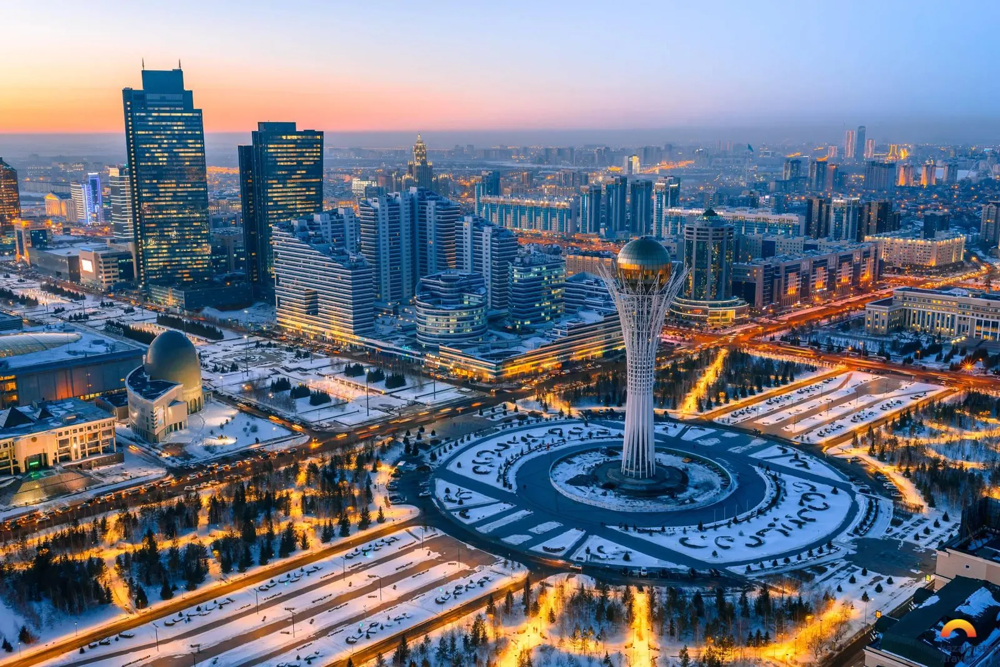
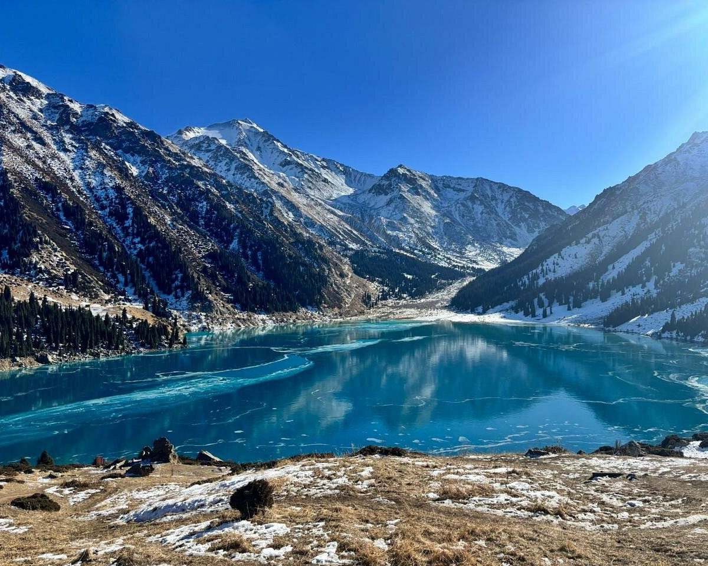

Where to visit

Charyn Canyon
A huge red-rock canyon more than 150 km long, often compared to the Grand Canyon. Its most famous part is called the Valley of Castles.

Bayterek Tower, Astana
A 97-meter tower in the capital with a golden glass sphere on top. It stands for a legendary tree of life, and you can go up for a view over the city.

Big Almaty Lake
A turquoise mountain lake high in the Tien Shan mountains, about 2,500 meters above sea level, close to the city of Almaty.